SECTION 1
このアプリについて
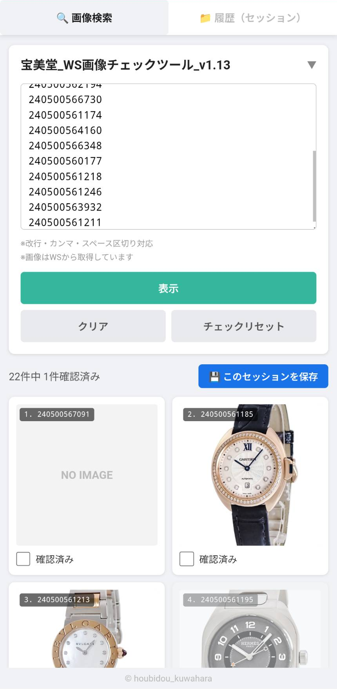
アプリの画面イメージ（画像カード一覧）
管理番号(12桁)を貼り付けるだけで、WASABIに登録されている商品画像を一覧表示できるアプリです。スマートフォン・タブレット・PCのどれでも使えます。
こんな場面で使います
◆
入出庫や棚卸時に管理番号と画像をスマホで照合したいとき
◆
「この商品、WASABIに画像ちゃんと入ってるかな？」をすぐ確認したいとき
◆
複数の商品をまとめてチェックして、確認済みを記録したいとき
SECTION 2
インストール方法
ブラウザから直接開くだけでも使えますが、スマホのホーム画面に追加するとアプリのようにすぐ起動できます。
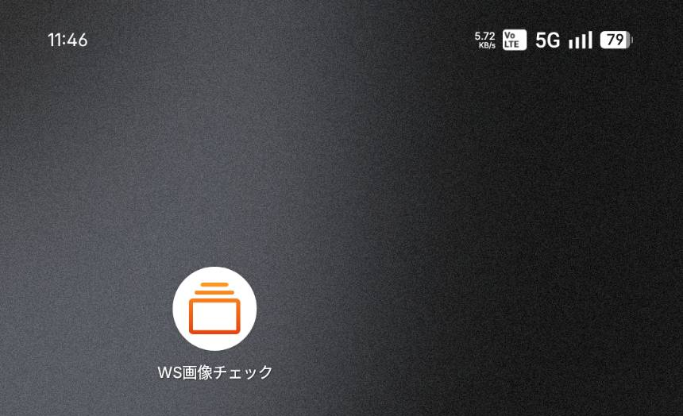
ホーム画面に追加するとアプリとして起動できます
📲 スマホのホーム画面にアプリとして追加する方法
▼ Android（アンドロイド）スマホの方
- 1「Chrome（クローム）」でアプリのURLを開く
- 2右上の「⋮（タテ三点）」をタップ
- 3「ホーム画面に追加」をタップ
▼ iPhone（アイフォン）の方
- 1「Safari（サファリ）」でアプリのURLを開く
- 2画面下部の「共有ボタン（↑箱マーク）」をタップ
- 3「ホーム画面に追加」をタップ
⚠ iPhoneは必ず「Safari」で開いてください（Chrome等では追加できません）
SECTION 3
アクセス・ログイン
アクセス方法
下記URLをブラウザで開きます。
・Android → Chrome（クローム）
・iPhone → Safari（サファリ）
QRコードを読み取ってアクセスすることもできます
ログイン手順
1
アプリを開くと、パスワードの入力画面が表示されます。
2
パスワード「houbidou01」を入力して「ログイン」をタップします。
3
一度ログインすると、次回から同じ端末・同じブラウザでは自動でログイン状態が続きます。
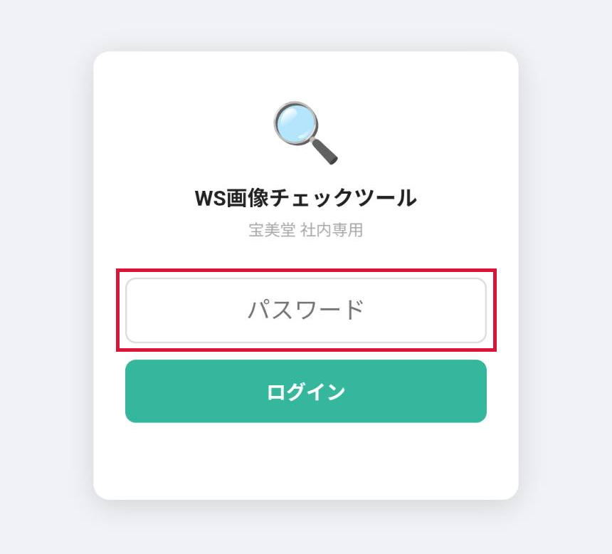
ログイン画面（初回または再ログイン時に表示されます）
パスワードが再度求められるケース
以下の状況では再ログインが必要です
◆
別の端末やブラウザで初めて開いたとき
◆
スマホの「履歴・サイトデータを削除」を実行したとき
◆
シークレットモード（プライベートブラウジング）で開いたとき
◆
パスワードが変更されたとき
※ アプリを閉じたり、端末を再起動しても自動ログアウトされません。
SECTION 4
管理番号を入力して画像を表示する
画像を表示する手順
1
上部のタブで「🔍 画像検索」が選ばれていることを確認します。
2
入力エリア（白い枠）に12桁の管理番号を貼り付けるか、直接入力します。
3
「表示」ボタンをタップすると、商品画像が一覧で表示されます。
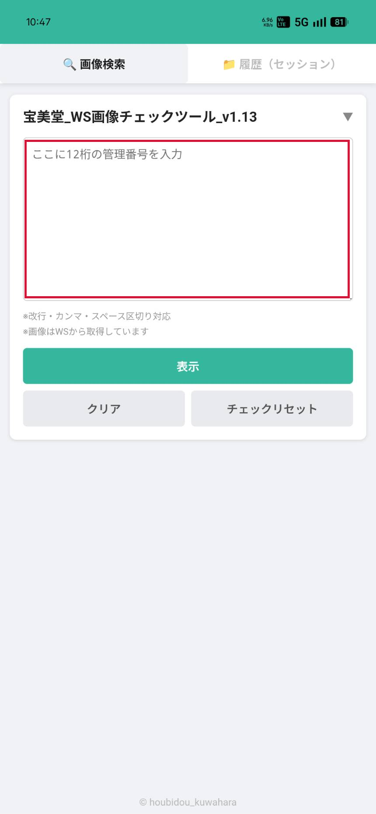
入力エリア（空の状態）
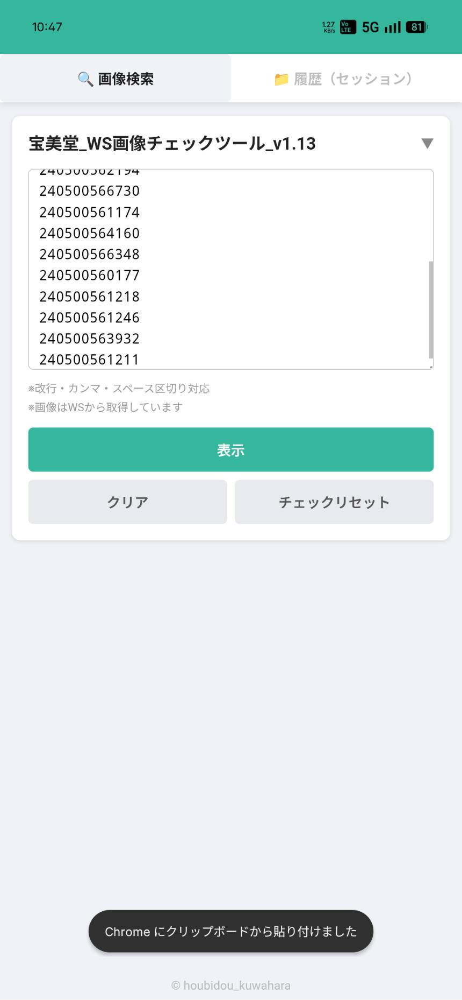
管理番号を貼り付けた状態
管理番号の入力形式について
複数の管理番号を一度に入力できます。区切り方はどれでも OK です。
- ◆ 改行区切り（1行に1つ）
- ◆ カンマ区切り
例：240500567091,240500561185 - ◆ スペース区切り
例：240500567091 240500561185
同じ番号が重複していても、自動で1件にまとめます。
表示結果の見かた
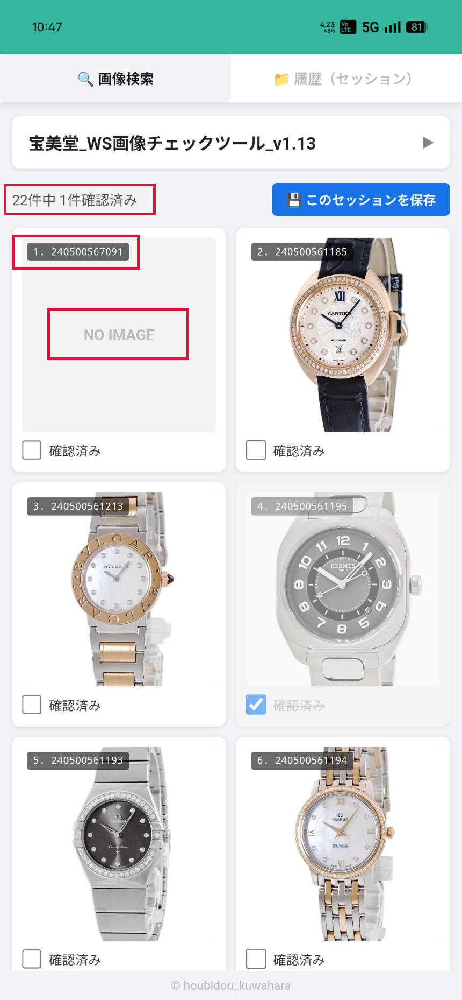
画像カード一覧（表示後）
◆
左上の黒いバッジ：並び順番号と管理番号が表示されます。
◆
NO IMAGE：WASABIに画像が登録されていない商品です。
◆
上部の「○件中 △件確認済み」：チェックの進捗がひと目でわかります。
入力パネルの開閉について
「表示」ボタンを押すと入力パネルは自動で折りたたまれます。
パネルのタイトル部分（▼ または ▶ のマーク）をタップすると再度開きます。
パネルのタイトル部分（▼ または ▶ のマーク）をタップすると再度開きます。
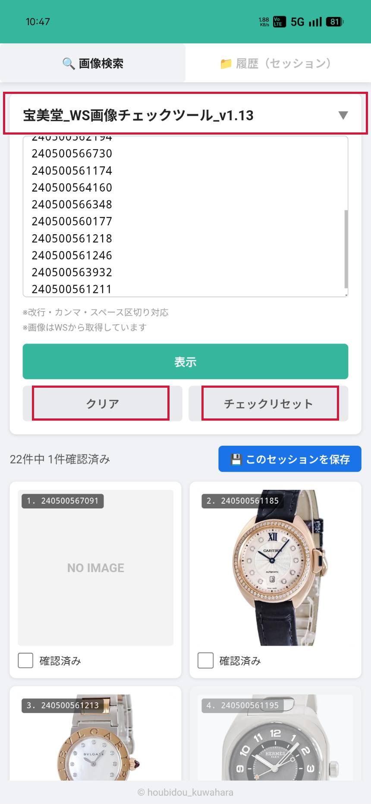
入力パネルを展開した全体表示
クリア・チェックリセットについて
◆
クリア：入力エリアの管理番号をすべて「消去」します。
◆
チェックリセット：現在表示中のカードのチェック状態をすべて「未チェック」に戻します。
SECTION 5
確認済みチェックをつける
1
画像カードの下部にある「確認済みチェックボックス」をタップします。
2
チェックをつけるとカードが半透明になり「確認済み」に取り消し線が入ります。
3
もう一度タップするとチェックが外れます。
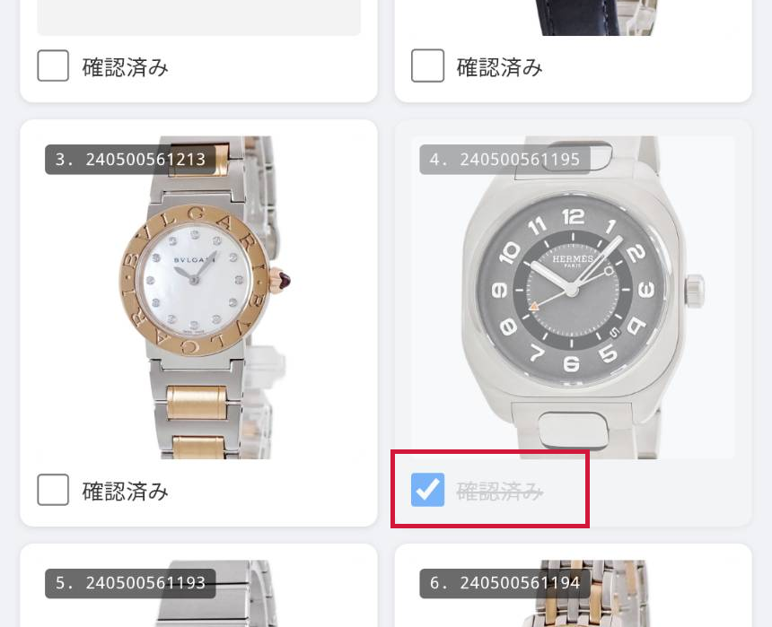
チェックをつけるとカードが半透明になります
チェック状態は自動で保存されます
チェックの状態は端末のブラウザに自動で記録されます。アプリを閉じても、次回同じ管理番号を表示したとき、前回のチェック状態が引き継がれます。
SECTION 6
作業内容を保存する（セッション保存）
管理番号のリストとチェック状態をまとめて「セッション」として名前をつけて保存できます。翌日に続きから確認したいときや、同じリストを何度も使いたいときに便利です。
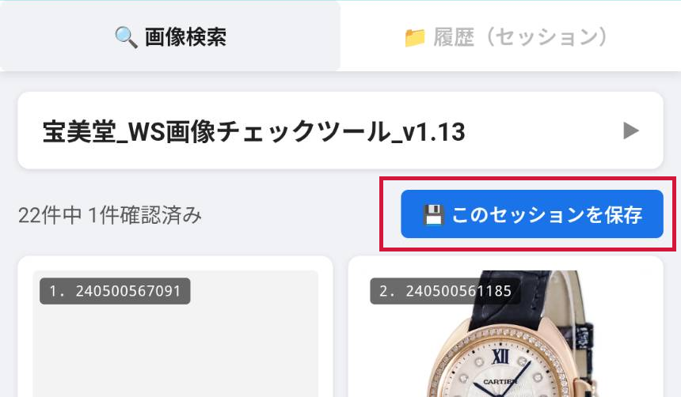
「💾 このセッションを保存」ボタン（画像表示後に上部に表示されます）
保存の手順
1
画像を表示すると、画面上部に「💾 このセッションを保存」ボタンが現れます。
2
ボタンをタップすると、「セッション名の入力ダイアログ」が表示されます。
3
名前を入力して「OK」をタップします（例：「2026-06-10 棚卸」）。
4
「○○を保存しました」と表示されれば完了です。
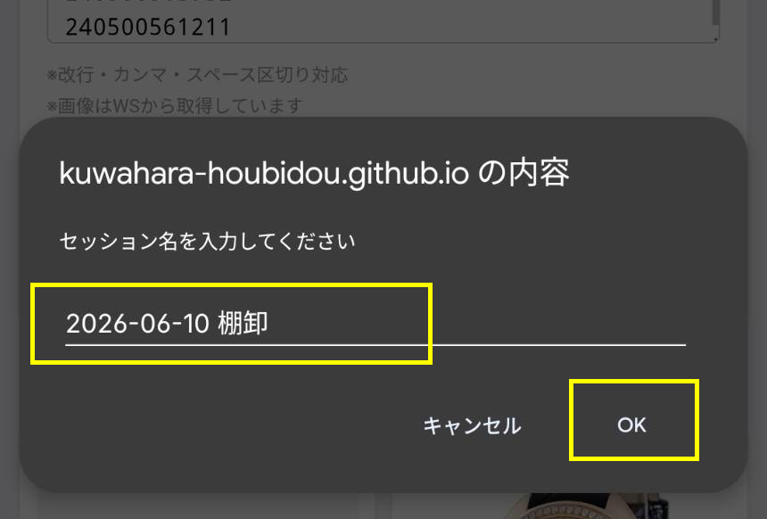
セッション名を入力してOKをタップ
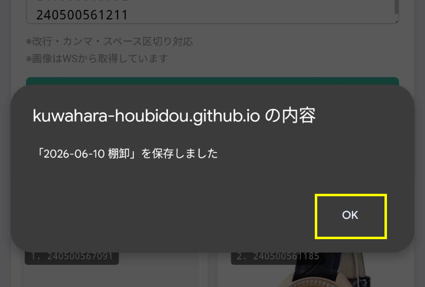
保存完了メッセージ
保存件数の上限について
1台の端末に最大 50件 まで保存できます。50件を超えると、古いものから自動的に削除されます。
SECTION 7
保存した履歴を呼び出す
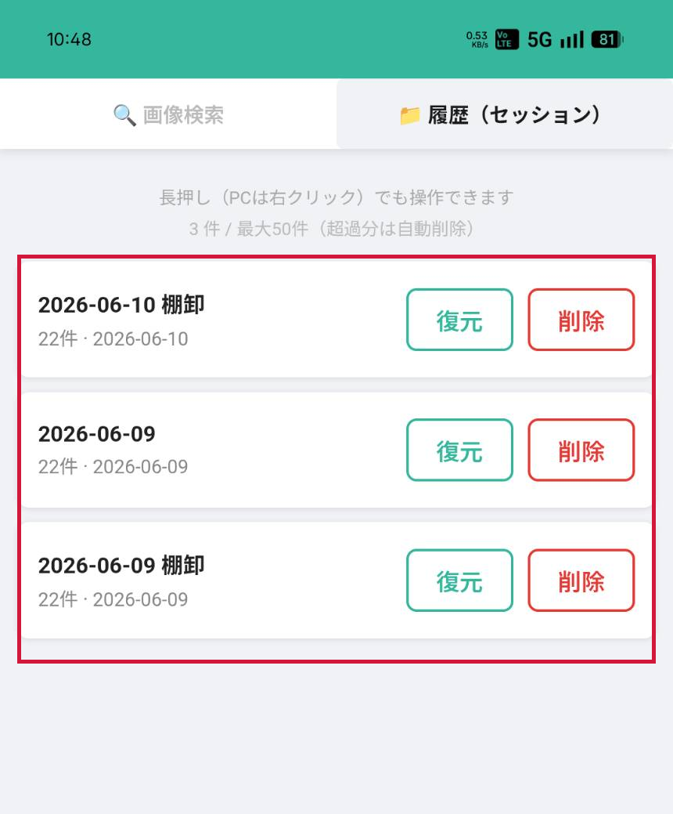
履歴（セッション）タブ
1
画面上部の「📁 履歴（セッション）」タブをタップします。
2
保存したセッションの一覧が表示されます（新しいものが上に表示されます）。
3
「復元」をタップすると、そのセッションの管理番号とチェック状態が画像検索タブに読み込まれます。
4
不要になったセッションは「削除」で消すことができます。
SECTION 8
FAQ（よくある質問）
Q1
PCの画面に表示されている管理番号をスマホにコピーするには？
A1
スマホのカメラアプリや「Googleレンズ」でPC画面を撮影すると、画像内の数字をテキストとして認識できます。認識された管理番号の範囲をなぞって「テキストをコピー」をタップし、このアプリの入力欄に貼り付けてください。
Q2
「NO IMAGE」と表示された商品は？
A2
WASABIに管理番号の商品画像が登録されていません。
Q3
アップデートがあったとき、何か操作が必要ですか？
A3
特に何もしなくて大丈夫です（バックグラウンドで自動的に最新版に更新されます）。大きい変更の際はLINEでお知らせします。その際は アプリの再起動 のみお願いします。
Q4
ログインが再度求められたのですが？
A4
以下の場合は再ログインが必要です。
・別の端末やブラウザで初めて開いたとき
・スマートフォンのブラウザデータを削除したとき
・シークレットモードで開いたとき
・パスワードが変更されたとき
アプリを閉じたり、端末を再起動しただけでは自動ログアウトはされません。
・別の端末やブラウザで初めて開いたとき
・スマートフォンのブラウザデータを削除したとき
・シークレットモードで開いたとき
・パスワードが変更されたとき
アプリを閉じたり、端末を再起動しただけでは自動ログアウトはされません。
Q5
保存したデータは他の人のスマホでも見られますか？
A5
いいえ。保存データはその端末のブラウザの中だけに保存されます。他の人の端末からは見えません。
Q6
複数人が同時に使っても問題ありませんか？
A6
はい、何人同時に使っても問題ありません。このアプリはインターネットにデータを送らない設計のため、他の人の操作と干渉することはありません。チェック状態などはすべて自分の端末の中だけで管理されています。
Q7
セキュリティ面は大丈夫ですか？
A7
はい、問題ありません。このアプリは個人情報を一切扱いません。保存されるのは管理番号とチェック状態のみで、すべて自分の端末の中だけに記録されます（外部サーバーには送られません）。表示される画像は、WASABIにすでに公開されているものをそのまま表示しているだけです。
Q8
使っていて困ったことや改善要望があるときは？
A8
EC事業部_桒原まで。改善要望などもお気軽にご連絡ください。